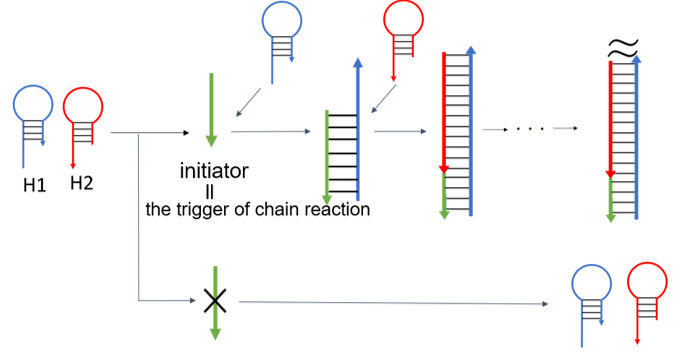
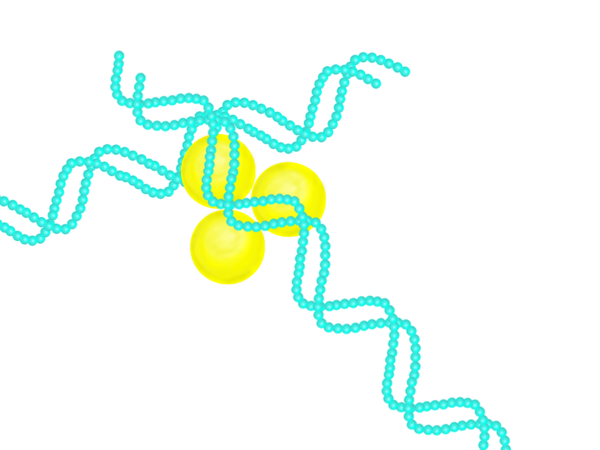
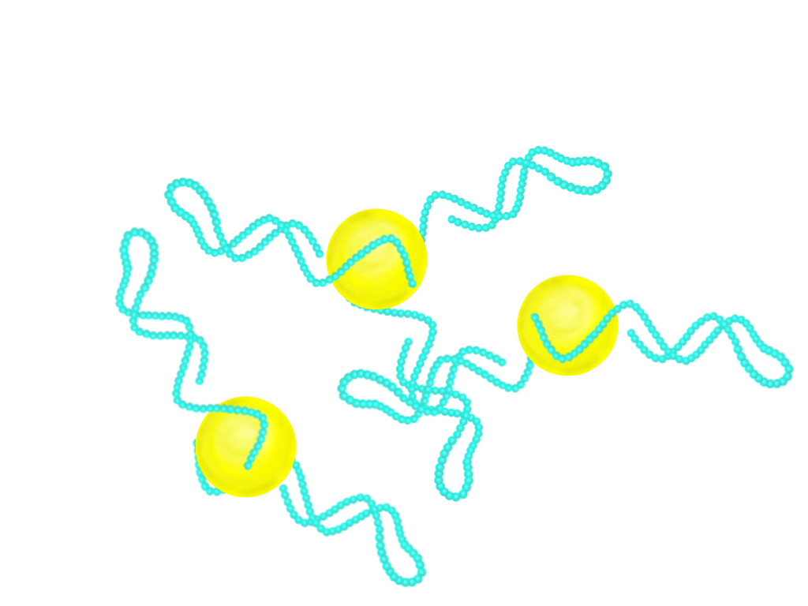
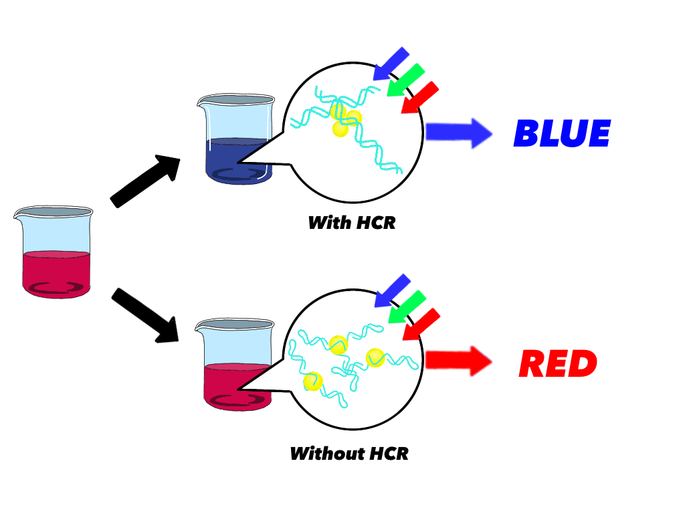
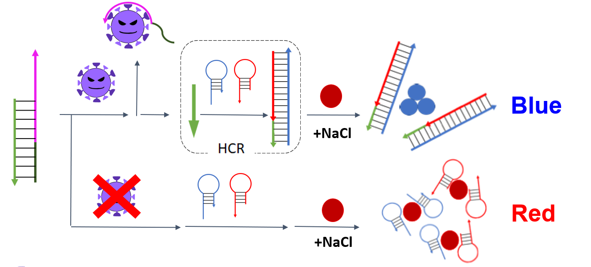
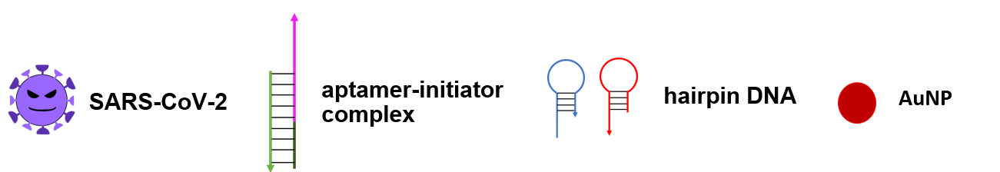

Description of HCR(HCRの説明)
The HCR method is a reaction that uses an initiator(extension starting point) and two types of hairpin DNA. This reaction starts from the Initiator and uses the specificity of the base pair of the two types of hairpin DNA and extend by crossing the probes. In the absence of the initiator, no reaction occurs and the secondary structure of the hairpin DNA remains So, as a characteristic of HCR, the reaction will proceed if there is a small amount of target that is collected individually.(HCR法とはInitiator（伸長起点）と二種類のヘアピンDNAを用いた連鎖反応です。本反応はInitiatorを起点として2種のヘアピンDNAの塩基配列の特異性を利用し、プローブ同士の交雑により伸長します。イニシエーターが存在しない場合は反応が起こることはなくヘアピンDNAがそのままの状態になります。なのでHCRの特徴として個人で採取できる少量のターゲットでも存在すれば反応は進みます。)
Mechanism of aggregation of gold nanoparticles(金ナノ粒子の凝集のメカニズム)
Single-stranded DNA (ssDNA) protects AuNP from salt aggregation by electrostatically adsorbing to the surface of AuNP. On the contrary, the exposure of the phosphate skeleton makes it difficult for negatively charged dsDNA to adhere to AuNP. The wavelength of light looks blue at 450 nm and red at 700 nm. Spherical gold nanoparticles with a diameter of 20 nm absorb light at 450-550 nm. The solution looks red because it absorbs blue light when dispersed, and looks blue because it absorbs red light when aggregated. The principle of seeing color is that some wavelengths are absorbed and the unabsorbed light enters the eye as reflected light and is recognized as color. For example, The sea is blue because water molecules absorb red light and its complementary color, blue light, remains.(一本鎖DNA（ssDNA）はAuNPの表面に静電吸着することで、AuNPを塩による凝集から防ぐことができる。逆にリン酸骨格の露出により負電荷dsDNAがAuNPに付着しにくい。光の波長が450nmで青、700nmで赤に見える。球状の金ナノ粒子の直径20nmで450-550nmの光を吸収する。分散時は青色の光を吸収するので溶液は赤色に、凝集時は赤色の光を吸収するので青色に見える。色が見える原理は一部の波長は吸収され、吸収されなかった光が反射光として目に入り色として認識することである。海が青いのは、水分子が赤色の光を吸収して、その補色である青色光が残るからである。)
 left:AuNPが凝集,right:AuNPが凝集していない
A series of flows(一連の流れ)
I will explain the flow of our ideas.First, saliva is collected and put into a test solution.The solution contains an aptamer-initiator complex, two types of hairpin DNA, and gold nanoparticles.Second, if even a small amount of coronavirus is present, the spike protein on the virus surface reacts with the aptamer, and the single strand on the aptamer side binds to the spike protein to generate an initiator.Then, this initiator is the starting point, and DNA elongation by HCR occurs.Third, the double-stranded DNA extended by HCR causes agglomeration of gold nanoparticles, changing the color of the solution from red to blue.You can see the result by this color change.Without the new coronavirus, there would be no reaction with aptamers, no initiators would be generated, no HCR would be started, and no color change would occur.(このセクションでは我々のアイディアの一連の流れを説明する。まず、唾液などを採取し検査溶液に入れる。検査溶液には、アプタマー・イニシエーター複合体、2種のヘアピンDNA、金ナノ粒子が含まれている。コロナウイルスが少量でも存在すれば、ウイルス表面のスパイクタンパク質とアプタマーが反応しアプタマー側の一本鎖がスパイクタンパク質と結合しイニシエーターが生成される。そしてこのイニシエーターが起点となり、HCRによるDNAの伸長が起こる。HCRによって伸長された二本鎖DNAにより金ナノ粒子の凝集が起こり、溶液の色が赤から青に変化する。この色の変化で結果が分かる。新型コロナウイルスがなければ、アプタマーとの反応が起こらずイニシエーターが生成されない。故にHCRが開始されず色の変化も起こらない。)
